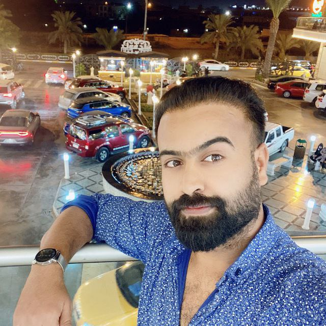
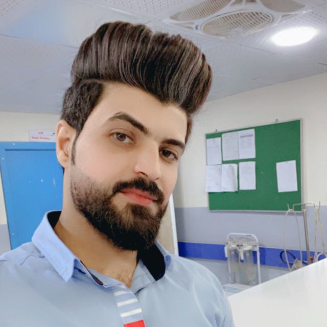

-
Ahmed Mohammed
I am an employee of the emergency laboratory at Imam Hussein Teaching Hospital. I hold a bachelor’s degree in biology. I work in the emergency department to diagnose and analyze all tests, as well as assist all laboratory staff members, as well as prepare and transport all laboratory materials.
-
Abdullah Ghadeer
Emergency Laboratory Manager at Imam Hussein Teaching Hospital, Practical Analysis Technician, in addition to the Emergency Unit Manager, I work on diagnosing and analyzing all analyses, as well as assisting all laboratory staff, as well as preparing and transporting all laboratory materials.
-
Tayseer Ali
Director of the Emergency Laboratory at Al-Imam Al-Hussein Teaching Hospital, Master of Technical Analysis, in addition to my work as Director of the Emergency Unit, I work on diagnosing and analyzing all analyses and also assisting all laboratory staff, in addition to preparing and transporting all laboratory materials.
-
Dhafir
I am one of the emergency laboratory staff at Imam Al-Hussein Teaching Hospital. I have a master’s degree in biology. I work in the emergency unit to diagnose and analyze all tests, and also to assist all laboratory staff, as well as to prepare and transport all laboratory materials.
-

Muntathar
I am one of the emergency laboratory staff at Al-Imam Al-Hussein Teaching Hospital. I have a master’s degree in technical analysis. I work in the emergency unit to diagnose and analyze all analyses, and also to assist all laboratory staff, as well as to prepare and transport all laboratory materials.
-

Ali Falh
I am one of the emergency laboratory staff at Imam Al-Hussein Teaching Hospital. I am a practical analysis technician in the emergency unit. I work on diagnosing and analyzing all tests, as well as assisting all laboratory staff, as well as preparing and transporting all laboratory materials.